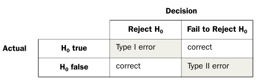
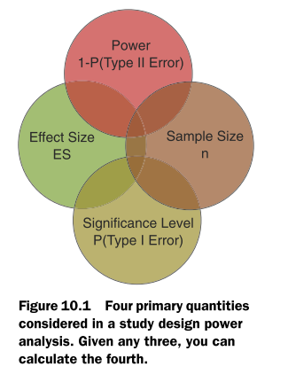
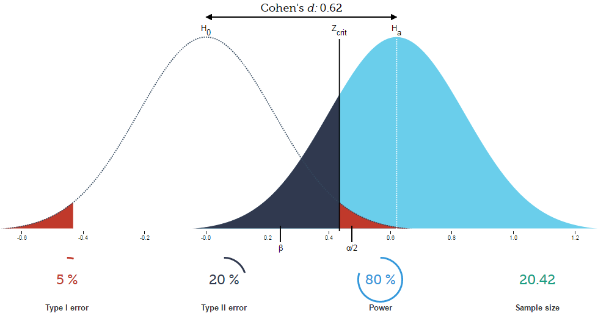

9. Power analysis¶
9.1. Giới thiệu¶
Power Analysis để trả lời ba vấn đề sau:
- Số lượng mẫu cần thiết cho thống kê
- Đánh giá ảnh hưởng của cỡ mẫu trên ước lượng
- Đánh giá độ mạnh của test
Kiểm định thống kê (statistical hypothesis)
Trong kiểm định thống kê, cơ bản đi qua các bước sau:
- Bước 1: Đưa ra giả định (null hypothesis ) \(H_0\) và giả định thay thế (alternative hypothesis) \(H_1\)
- Bước 2: Tính toán xác suất có thể giữ lại \(H_0\) p-value.
- Bước 3: Ra quyết định dựa trên p-value. Nếu p-value nhỏ hơn mức ý nghĩa thống kê (significance level) \(\alpha\), ta loại bỏ \(H_0\), sử dụng \(H_1\). Ta nói rằng, kết quả đưa ra với độ tin cậy về mặt thống kê là \(1-\alpha\)
Các loại lỗi với thống kê
Khi làm kiểm định sẽ có các trường hợp sau:

Bốn khía cạnh khi xem xét kiểm định thống kê
Khi phân tích kiểm định thống kê cần xem xét đến 4 yếu tố:
- Sample size (cớ mẫu): Số lượng quan sát có trong mẫu
- Significance level (ý nghĩa thống kê): Xác suất xảy ra sai số loại 1 hay xác suất KHÔNG xảy ra \(H_0\)
- Power (Độ mạnh): 1 trừ xác suất xảy ra lỗi loại 2
- Effect size: Giá trị thực tế - Giá trị giả thuyết. VD: \(H_0\): giá trị trung bình là 90, giá trị trung bình thực tế là 100. Vậy, effect size = 90 - 100 = -10. Lưu ý: Effect size phụ thuộc nhiều vào phương pháp và do đó, có nhiều cách tính khác nhau


9.2. Ví dụ¶
pwr.t.test(n=,d=,sig.level=,power=,level=, type=, alternatie=)
Trong đó:
- n: cỡ mẫu
- d: effect size là độ khác biệt đã được chuẩn hóa giữa 2 mẫu (standardized mean difference) \(d=\fraction{\mu_1-\mu_2}{\sigma}\) với \(\mu_1\), \(\mu_2\) là giá trị trung bình của 2 nhóm, \(\sigma^2\) là là phương sai của mẫu
- sig.level: significance level
- power: power level
- type: two-saple, on-sample
- alternativeL Xác định test là 1 phía hay hai phía
Ví dụ 1: Ta cần so sánh thời gian phản ứng khi KH gọi đến cho 2 nhóm tài xế: Nhóm 1 sử dụng di động, nhóm 2 không sử dụng di động với độ lệch chuẩn là 1.25 giây. Giả định sự khác biệt giữa 2 nhóm là 1 giây được coi là cao thì d=1/1.25=0.8. Ta muốn chắc chắn 2 điều sau:
- 90% chắc chắn rằng xảy ra sự khác biệt (power=90%)
- 95% chắc chắn rằng yếu tố xảy ra không phải do ngẫu nhiên (sig.level=5%)
Hỏi cẩn bao nhiêu quan sát trong mẫu?
#install.packages("pwr")
library(dplyr)
library(pwr)
pwr.t.test(d=.8, sig.level=.05, power=0.9,type="two.sample",
alternative="two.sided")
##
## Two-sample t test power calculation
##
## n = 33.82555
## d = 0.8
## sig.level = 0.05
## power = 0.9
## alternative = two.sided
##
## NOTE: n is number in *each* group
Kết quả cho thấy ta cần 34 quan sát trong mỗi nhóm tài xế (sử dụng và không sử dụng di động) để có thể phát hiện ra độ khác biệt (effect size) 0.8 với độ chắc chắn 90% và 5% xảy ra hiện tượng trên chỉ do ngẫu nhiên
Các chỉ số khác có thể được tính toán nếu có đủ 3 trong 4 yếu tố đầu vào
#Tìm power
pwr.t.test(n=34,d=.8, sig.level=.05, type="two.sample",
alternative="two.sided")
##
## Two-sample t test power calculation
##
## n = 34
## d = 0.8
## sig.level = 0.05
## power = 0.9015019
## alternative = two.sided
##
## NOTE: n is number in *each* group
#Tìm d
pwr.t.test(n=34, power=0.9, sig.level = 0.05, type="two.sample",
alternative="two.sided")
##
## Two-sample t test power calculation
##
## n = 34
## d = 0.7978727
## sig.level = 0.05
## power = 0.9
## alternative = two.sided
##
## NOTE: n is number in *each* group
9.3. Hiểu sâu hơn về p-value¶
Định nghĩa p-value: “P value is the probability of obtaining an effect at least as extreme as the one in your sample data, assuming the truth of the null hypothesis”
Giải thích: Nếu ta giả định \(H_0\) đúng, \(H_0\) sẽ xảy ra với xác suất p_value do yếu tố ngẫu nhiên lấy mẫu
Các bước tính toán p-value được diễn ra theo trình tự sau:
- Đề ra một giả thuyết chính (\(H_1\))
- Từ giả thuyết chính, đưa ra giả thuyết đảo (\(H_0\))
- Thu thập dữ liệu trên mẫu D
- Tính toán xác suất XẢY RA D nếu \(H_0\) là sự thật, hay \(P(D|H_0)\)
Ví dụ: Giả sử ta sử dụng 2 loại vắc-xin A & B để so sánh sự khác biệt về hiệu quả trên 1000 bệnh nhân, ta thấy p-value = 4%. Điều này nghĩa là: Nếu ta giả định rằng A & B không có sự khác biệt (\(H_0: \mu_A=\mu_B\)) thì xác suất xảy ra sự khác biệt giữa A & B về mặt thống kê chỉ là 4%
Kết luận sai: Nếu loại bỏ \(H_0\), giữ \(H_1\), chỉ có 4% khả năng xảy ra sai số.
Các bước tính toán:
- Bước 1: \(H_1\) - Có sự khác biệt về hiệu quả 2 vắc xin
- Bước 2: \(H_0\) - Không có sự khác biệt giữa hai loại vắc-xin
- Bước 3: Thu thập dữ liệu trên mẫu 1000 người
- Bước 4: Giả định rằng \(H_0\) là chính xác, tức là sự khác biệt giữa người sử dụng A và B chỉ là do yếu tố ngẫu nhiên thì xác suất tìm được mẫu D có 1000 bệnh nhân mà sự khác biệt giữa hiệu quả của A & B trong nghiên cứu chỉ là 4%
Như vậy, p-value không nói trực tiếp đến giả thuyết chính (alternative hypothesis \(H_1\)) mà chỉ GIÁN TIẾP đưa ta quyết định lựa chọn.
Khiếm khuyết của p-value: P-value đưa ra xác suất (độ khả dĩ) của dữ kiện mà không đửa ra xác suất của giả thuyết
9.4. Một số test thống kê¶
9.4.1. Sai lầm loại 1 và loại 2¶

SAI LẦM LOẠI 1 VÀ LOẠI 2
P(loại 1) = \(\alpha\) : mức ý nghĩa
P(loại 2) = \(\beta\) ; với \(1 - \beta\) gọi là lực kiểm định
Do \(\alpha\) và \(\beta\) có xu thế ngược nhau, ta cố định \(\alpha\) và chọn hàm quyết định để \(\beta\) nhỏ nhất (hay \(1 - \beta\) lớn nhất)
Hằng số C liên quan đến sai lầm loại 1 và loại 2 :

HẰNG SỐ C
9.4.2. Kích thước mẫu đối với một chỉ số trung bình¶
Công thức :
Trong đó,
C : hằng số giữa sai lầm loại 1 và loại 2
d : độ dao động của trung bình mà nghiên cứu muốn chỉ ra
\(\sigma\) : căn cứ về độ dao động từ các nghiên cứu trước đó
Ví dụ 3.2.1:
Ước tính chiều cao ở nam giới Việt Nam, chấp nhận sai số 1 cm (d = 1), khoảng tin cậy 95% (\(\alpha\) = 0.05), power = 80% (\(\beta\) = 0.2). Các nghiên cứu trước đó cho thấy độ lệch chuẩn khoảng 4.6 cm.
Công thức ước tính cỡ mẫu cần thiết cho nghiên cứu :
Dùng hàm power.t.test có thể ước tính cỡ mẫu trên :
power.t.test(delta = 1
,sd = 4.6
,sig.level = .05
,power = .80
,type = 'one.sample')
##
## One-sample t test power calculation
##
## n = 168.0131
## delta = 1
## sd = 4.6
## sig.level = 0.05
## power = 0.8
## alternative = two.sided
9.4.3. Kích thước mẫu khi so sánh hai số trung bình¶
Công thức :
Trong đó,
C : hằng số giữa sai lầm loại 1 và loại 2
d : chênh lệch trung bình giữa 2 nhóm mà nghiên cứu muốn chỉ ra
\(\sigma\) : căn cứ về độ khác biệt trung bình từ các ghiên cứu trước đó
Ví dụ 3.3.1:
Để đánh giá hiệu quả của chương trình tặng quà Loyalty nhằm thúc đẩy khách hàng gửi TD Online. Có 2 nhóm được chọn: nhóm 1 được tặng quà Loyalty và nhóm 2 không được tặng quà Loyalty.Hiệu quả từ các chương trình trước đó cho thấy trung bình có 5% số khách hàng gửi TD Online, độ lệch chuẩn 0.5%. Cần nghiên cứu bao nhiêu khách hàng để “chứng minh” nhóm 1 gửi TD Online nhiều hơn nhóm 2 là 1.1 lần?
Gọi trung bình của 2 nhóm là \(\mu_1\) và \(\mu_2\)
Nhóm 1 gửi nhiều hơn nhóm 2 là 1.1 lần nên:
Chênh lệch trung bình giữa 2 nhóm :
Với \(\alpha = 0.05\), \(power = 0.9\) công thức ước tính cỡ mẫu cần thiết cho nghiên cứu :
Thực hành trong R
power.t.test(delta = 0.005
,sd = 0.05
,sig.level = .05
,power = .90
,type = 'two.sample')
##
## Two-sample t test power calculation
##
## n = 2102.445
## delta = 0.005
## sd = 0.05
## sig.level = 0.05
## power = 0.9
## alternative = two.sided
##
## NOTE: n is number in *each* group
Kết quả chỉ ra rằng cần nghiên cứu trên 2102 khách hàng mỗi nhóm (tổng cộng 4204 khách hàng)
##Kích thước mẫu khi phân tích phương sai
Trong phân tích phương sai (ANOVA), hệ số trung bình bình phương phần dư (residual mean square - RMS) chính là ước tính của độ dao động khi đo lường các nhóm.
Ví dụ 3.4.1
Tìm sự khác biệt giữa thu nhập của 2 người A và B
Tạo biến :
A <- rnorm(1000,5,1)
B <- rnorm(1000,6,2)
A %>% summary
## Min. 1st Qu. Median Mean 3rd Qu. Max.
## 1.798 4.413 5.023 5.026 5.645 8.149
B %>% summary
## Min. 1st Qu. Median Mean 3rd Qu. Max.
## -1.745 4.812 6.126 6.164 7.492 13.022
Phân tích ANOVA
x = c(rep("A",1000),rep("B",1000))
x <- as.factor(x)
y = c(A, B)
data.anov <- data.frame(y, x)
data.anov %>% summary
## y x
## Min. :-1.745 A:1000
## 1st Qu.: 4.545 B:1000
## Median : 5.393
## Mean : 5.595
## 3rd Qu.: 6.446
## Max. :13.022
aov.model <- aov(y ~ x, data = data.anov)
summary(aov.model)
## Df Sum Sq Mean Sq F value Pr(>F)
## x 1 647 647.5 255.5 <2e-16 ***
## Residuals 1998 5063 2.5
## ---
## Signif. codes: 0 '***' 0.001 '**' 0.01 '*' 0.05 '.' 0.1 ' ' 1
Xác định kích thước mẫu để chỉ ra rằng có sự khác biệt giữa thu nhập của A và B
groupmeans <- c(mean(A), mean(B))
power.anova.test(groups = length(groupmeans)
,between.var = var(groupmeans)
,within.var = 2.5 ##mean Sq residuals
,power = 0.90
,sig.level = 0.05)
##
## Balanced one-way analysis of variance power calculation
##
## groups = 2
## n = 41.5547
## between.var = 0.6474801
## within.var = 2.5
## sig.level = 0.05
## power = 0.9
##
## NOTE: n is number in each group
9.4.4. Sử dụng khoảng tin cậy khi ước lượng trung bình¶
Xuất phát từ việc ước lượng trung bình của biến ngẫu nhiên X phân phối chuẩn ta có :
Khoảng tin cậy theo ước lượng này :
Trong đó,
- \(S\) : độ lệch chuẩn của mẫu điều tra thử
- \(N\) : kích thước tổng thể
- \(n\) : kích thước mẫu quan sát
Với việc lựa chọn I (biến động của giá trị trung bình), ta có thể xác định kích thước mẫu :
Tính hệ số \(U_{\alpha/2}\)
a = 0.05
qnorm(1-a/2)
## [1] 1.959964
9.4.5. Sử dụng tỷ lệ phương sai¶
Công thức tính phương sai :
Từ đó :
Bằng việc lựa chọn tỷ lệ của phương sai trung bình mẫu so với phương sai tổng thể ( :raw-latex:`\frac{\sigma_X^{2}}{\sigma^{2}}` ), ta có thể xác định kích thước mẫu.